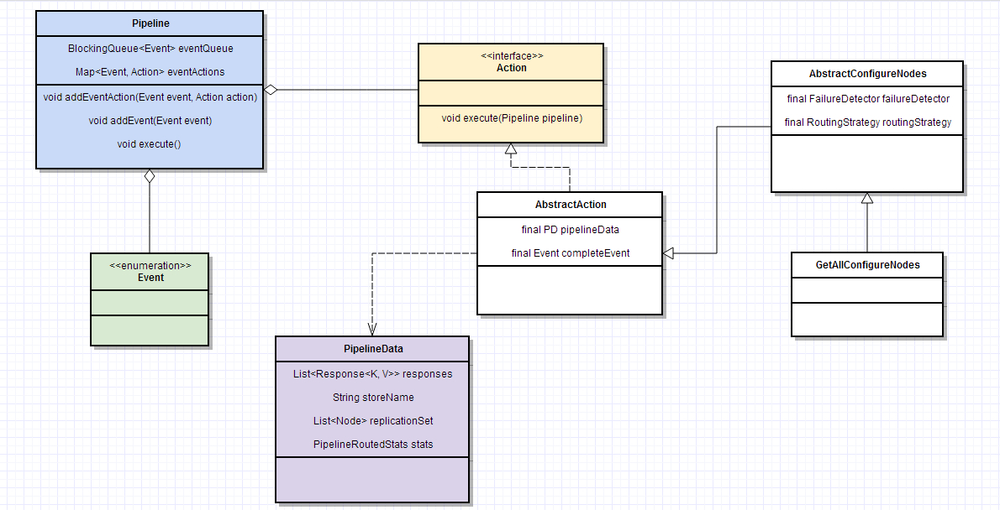

前言
由于最近在看Voldemort的wiki和源码，其中涉及到了Pipeline，该模式使用广泛，在众多软件如：Tomcat、Netty、Voldemort等组件中有使用，十分有必要了解一下。
Pipeline
pipeline：它是由多个成员组成的一个链式结构，其中每个成员的输出是其下一个成员的输入。
模式中的角色：
-
Command：需要被处理的命令 -
PipelineManager：模式的核心类。定义了如下属性和方法：-
handlers：有顺序的handler列表 -
doPipeline(Command object)：
-
-
Handler：一个定义了process(Command object)方法的接口
我们以voldemort的 Pipeline 部分的源码为例，它为了解决客户端逻辑过于复杂的问题，使用了pipeline模式，将一个操作（get、getVersion、put等）分解成不同部分进行处理，分解后操作的更易理解和重用。
源码涉及到的主要角色有：
-
Event：列出了可能会发生事件的枚举 -
Pipeline：该模式的核心类，定义了如下关键属性与方法：-
eventQueue：待处理Event的有序队列queue -
eventAction：存放Event和Action的对应关系的map -
execute()：按顺序处理收到的Event
-
-
PipelineData：记录pipiline执行过程中的各种状态的pojo -
Action：一个定义了 excute(Pipeline pipeline) 方法的接口
类图： 
源码片段：
// PipelineRoutedStore.java
public List<Versioned<byte[]>> get(final ByteArray key,
final byte[] transforms,
final long getOpTimeout) {
final Pipeline pipeline = new Pipeline(Operation.GET, getOpTimeout, TimeUnit.MILLISECONDS);
AbstractConfigureNodes<ByteArray, List<Versioned<byte[]>>, BasicPipelineData<List<Versioned<byte[]>>>> configureNodes = makeNodeConfigurationForGet(pipelineData,
key);
pipeline.addEventAction(Event.STARTED, configureNodes);
pipeline.addEventAction(Event.CONFIGURED,
new PerformParallelRequests<List<Versioned<byte[]>>, BasicPipelineData<List<Versioned<byte[]>>>>(pipelineData,
allowReadRepair ? Event.RESPONSES_RECEIVED
: Event.COMPLETED,
key,
transforms,
failureDetector,
storeDef.getPreferredReads(),
storeDef.getRequiredReads(),
getOpTimeout,
nonblockingStores,
Event.INSUFFICIENT_SUCCESSES,
Event.INSUFFICIENT_ZONES));
pipeline.addEventAction(Event.INSUFFICIENT_SUCCESSES,
new PerformSerialRequests<List<Versioned<byte[]>>, BasicPipelineData<List<Versioned<byte[]>>>>(pipelineData,
allowReadRepair ? Event.RESPONSES_RECEIVED
: Event.COMPLETED,
key,
failureDetector,
innerStores,
storeDef.getPreferredReads(),
storeDef.getRequiredReads(),
blockingStoreRequest,
null));
pipeline.addEvent(Event.STARTED);
try {
pipeline.execute();
} catch(VoldemortException e) {
stats.reportException(e);
throw e;
}
if(pipelineData.getFatalError() != null)
throw pipelineData.getFatalError();
List<Versioned<byte[]>> results = new ArrayList<Versioned<byte[]>>();
for(Response<ByteArray, List<Versioned<byte[]>>> response: pipelineData.getResponses()) {
List<Versioned<byte[]>> value = response.getValue();
if(value != null)
results.addAll(value);
}
return results;
}
// Pipeline.java
public enum Event {
STARTED,
CONFIGURED,
COMPLETED,
INSUFFICIENT_SUCCESSES,
INSUFFICIENT_ZONES,
RESPONSES_RECEIVED,
ERROR,
MASTER_DETERMINED,
ABORTED,
HANDOFF_FINISHED;
}
private final BlockingQueue<Event> eventQueue;
private final Map<Event, Action> eventActions;
public void addEventAction(Event event, Action action) {
eventActions.put(event, action);
}
public void addEvent(Event event) {
if(event == null)
throw new IllegalStateException("event must be non-null");
if(logger.isTraceEnabled())
logger.trace("Adding event " + event);
eventQueue.add(event);
}
public void execute() {
try {
while(true) {
Event event = null;
try {
event = eventQueue.poll(timeout, unit);
} catch(InterruptedException e) {
throw new InsufficientOperationalNodesException(operation.getSimpleName()
+ " operation interrupted!", e);
}
if(event.equals(Event.ERROR)) {
if(logger.isTraceEnabled())
logger.trace(operation.getSimpleName()
+ " request, events complete due to error");
break;
} else if(event.equals(Event.COMPLETED)) {
if(logger.isTraceEnabled())
logger.trace(operation.getSimpleName() + " request, events complete");
break;
}
Action action = eventActions.get(event);
action.execute(this);
}
} finally {
finished = true;
}
}
// GetAllConfigureNodes.java
public void execute(Pipeline pipeline) {
Map<Node, List<ByteArray>> nodeToKeysMap = Maps.newHashMap();
Map<ByteArray, List<Node>> keyToExtraNodesMap = Maps.newHashMap();
for(ByteArray key: keys) {
List<Node> nodes = null;
List<Node> originalNodes = null;
try {
originalNodes = getNodes(key);
} catch(VoldemortException e) {
pipelineData.setFatalError(e);
pipeline.addEvent(Event.ERROR);
return;
}
}
pipelineData.setKeyToExtraNodesMap(keyToExtraNodesMap);
pipelineData.setNodeToKeysMap(nodeToKeysMap);
pipelineData.setTransforms(transforms);
pipeline.addEvent(completeEvent);
}
voldemort客户端的每次操作（get、put、delete等）都是一次Pipeline的执行过程，我们以get操作为例， 客户端通过StoreClient接口执行一个get操作---》实际是通过PipelineRoutedStore对象执行的get---》PipelineRoutedStore的get方法内部构建一个Pipeline对象---》执行该Pipeline的excute方法---》返回结果。
从源码中可以看出Pipeline的构成过程，主要可以分为两步；1）定义各种Event对应的Action，并将其存入eventActions中。2）向eventQueue存入一个Event.STARTED，并执行Pipeline的excute。
和常见的Pipeline模式不同的是，voldemort中Pipeline的处理流程不是直接定义好的，而是由Action控制的，每个Action根据其执行结果动态控制。
chain of responsibility
the idea of the Chain of responsibility is that it aviods coupling the sender of the request to the receiver,giving more than one object the opportunity to handle the request.（责任链模式的目的在于，避免请求发送方和接收方的耦合，使得至少一个对象有机会处理请求。）
责任链模式特点：
- 请求发送方不知道是链中哪个对象会处理请求
- 链中的每个节点都有权决定是否处理当前请求
- 如果节点决定推进请求，它应该有能力选择下一个节点然后推进它。
- 可能会出现没有任何节点处理该请求
该模式中涉及到角色：
-
Command：要处理的对象 -
Handler：
日期：2014-04-21
参考资料：wikipedia-Pipeline (software)、Design Pattern: the Pipeline、The Chain Of Responsibility Pattern、http://javapapers.com/design-patterns/chain-of-responsibility-design-pattern/